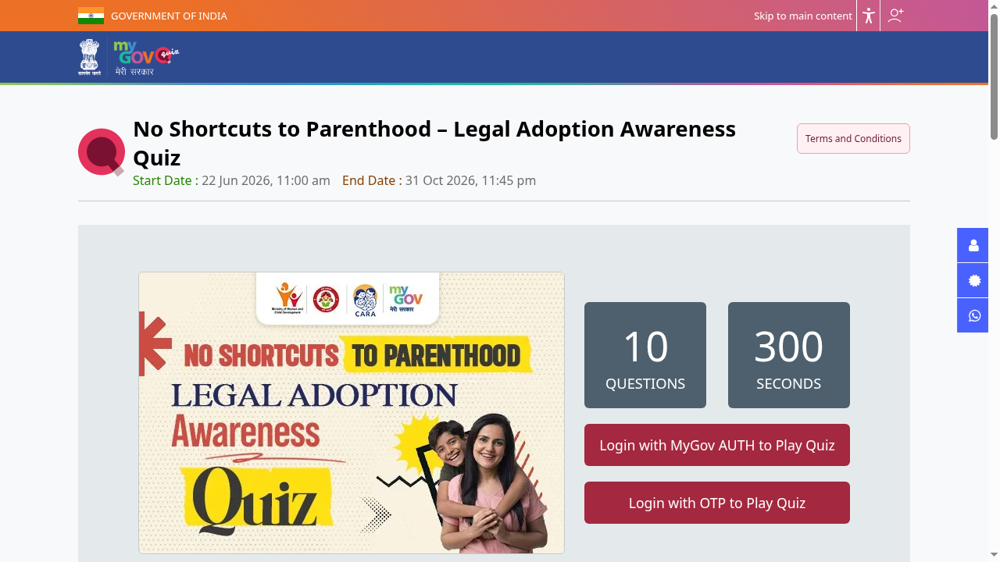

CARA legal adoption awareness quiz: 10 winners get ₹2,000 each, ends 31 October
The Central Adoption Resource Authority (CARA) and MyGov are running the "No Shortcuts to Parenthood" Legal Adoption Awareness Quiz. It has 10 questions in 300 seconds, is open to all Indian citizens, and the 10 winners get ₹2,000 each. Every participant gets an e-certificate. It runs until 31 October 2026, 11:45 PM.

Official publisher artwork hosted by its publisher. Official source. Independent guide, not affiliated or sponsored. Artwork and trademarks belong to their owners.
How to play: step by step
Checked on the live MyGov quiz pages on 19 October 2026.
- Open the official quiz page: quiz.mygov.in/quiz/no-shortcuts-to-parenthood-legal-adoption-awareness-quiz. The page shows 10 questions, 300 seconds and the end date (31 October 2026, 11:45 PM).
- Tap Login with MyGov AUTH to Play Quiz or Login with OTP to Play Quiz.
- New to MyGov: register with MyGov Auth or with DigiLocker (MeriPehchaan single sign-on). Already registered: enter your email or mobile number and tap Request OTP.
- Enter the OTP sent to your email/mobile to log in.
- Fill your profile details if the quiz asks for them, then click Play Quiz - the 300-second timer starts immediately and entries cannot be withdrawn once submitted.
- Answer the 10 questions and submit. The 10 winners get ₹2,000 each and everyone gets an e-certificate in their MyGov dashboard.


Steps 5-6 happen inside your own login, so they are not shown as screenshots.
Video guides
We searched YouTube on 19 October 2026 for a step-by-step entry video for this quiz in English and in Malayalam. We could not verify one that covers this quiz and the current MyGov portal, so we are not linking any rather than risk an unrelated video. (Note: videos about registering as adoptive parents on CARA's own system are a different process and are not linked here.)
What is the quiz about?
The official page says the quiz aims to improve understanding of the legal provisions under the Juvenile Justice (Care and Protection of Children) Act, 2015, to highlight the risks of illegal adoption, and to promote adoption through the Mission Vatsalya Portal as the only lawful pathway.
Rules from the official page
| Who | All Indian citizens. |
|---|---|
| Format | 10 questions in 300 seconds, picked randomly from a question bank. |
| Marking | No negative marking. |
| Dates | 22 June 2026, 11:00 AM to 31 October 2026, 11:45 PM. |
| Details | You give your name, email and phone number. Impersonation or double participation voids an entry. |
What are the prizes?
- 10 winners: ₹2,000 each
- E-certificate of participation for every participant
Per the terms, winners are picked by an automated random draw from a pool of entries that answer everything correctly within the time limit. Entering does not guarantee a cash prize.
A careful checklist
- Open quiz.mygov.in and find the quiz yourself.
- Read the Terms and Conditions on the page.
- Start when you have 5 uninterrupted minutes. The timer runs for 300 seconds.
- Finish before 31 October 2026, 11:45 PM.
We did not log in or play. We read the prizes and the first seven rules, not every clause.
Related CARA and MyGov contests
The same campaign also has a poster competition (top 15 win ₹3,000 each) and a Myth vs Reality infographic contest (10 winners get ₹2,000 each), both ending 31 October 2026. They are separate entries on MyGov.
Frequently asked questions
Is there an entry fee?
The page we read does not mention one.
Is this about adopting a child?
No. It is an awareness quiz. The page names the Mission Vatsalya Portal as the lawful route for adoption.
Source: Official MyGov quiz page. Checked 8 October 2026; play steps and video search re-checked 19 October 2026. This is an AiCoN explainer, not a government publication.